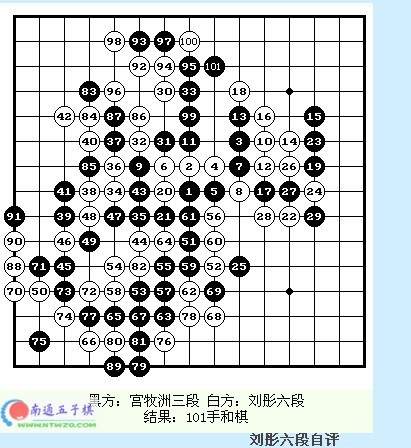

宫牧洲VS刘彤——刘彤六段自评
#1 宫牧洲VS刘彤——刘彤六段自评 作者：茗弈宽容 发表时间：2010-3-11 19:57:41

刘彤六段自评
第二轮。我对我的学生宫牧洲。深蓝网论坛,深海湛蓝,深蓝网5 `! X0 x: j5 ]- P" k) B# o
这一轮小宫执黑。疏星开局，我没交换。白4强防。黑5最流行的下法。前16手定式。白18斜活三，黑19防。因为上一轮小宫对上海棋手葛凌峰时走的也是这个变化，小宫的20下在白22处。葛凌峰黑下在白34处。一下黑的优势。所以我20手下在了黑的要点上。黑21手防。白22再防黑的活二，有杀。黑23活三。黑25做，好手。白26跳活。28做杀。黑29手强防。白30在上面和上面联系。31边防带做。32防住黑冲再做杀。33强防。34防。35好手。白36手对攻。37手防。38活三。39防，40再做，41防。42手太想胜了，可能有问题。43反挡。白44手强防。但是丢掉了先手。果真，小宫经过了二十多分钟的长考。终于开始进攻了。45跳三，46强，47冲。48防。49再冲，50防。51妙，作棋和下面的子力进行联系。52强防。这步棋我思考了三、四十分钟。53跳三，54防，55再活三，56强。57好手，58最强。59再做，60最强。61冲，62防，63冲，64防，65冲，66防，67活三，68冲四，69防，70跳冲，71防，72再冲，73防，74再冲，75防，76防回。黑上面无法胜。黑上面交换后，83手防白棋。但是上面已经太小，白在上面连续进攻后，由于空间太小，虽然先手，但没有地方，最终和棋。这盘棋和得非常吃力。宫三段中盘进攻非常厉害，是北京棋手中进步最快的。 深蓝网论坛,深海湛蓝,深蓝网0 U, _/ n% e, Y( ^! F
#2 Re:宫牧洲VS刘彤——刘彤六段自评 作者：茗弈宽容 发表时间：2010-3-11 19:59:06
这篇文章是08年看到的，也不清楚是什么时候的对局了，且寻着师傅的足迹去看看吧......#3 Re:宫牧洲VS刘彤——刘彤六段自评 作者：屏蔽 发表时间：2010-3-11 21:45:19
2001年“经纬杯”连珠十人争霸赛
http://www.ljrenju.cn/news/jwb1/jwb1-2001.htm
［此帖子已被 屏蔽 在 2010-3-11 21:46:07 编辑过］
#4 Re:宫牧洲VS刘彤——刘彤六段自评 作者：茗弈小刀 发表时间：2010-3-12 10:35:12
谢谢李一老师补充。